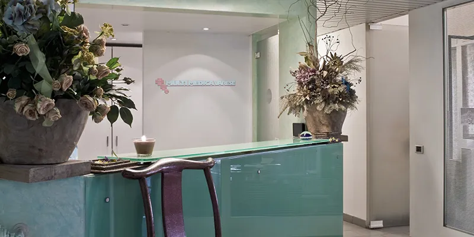
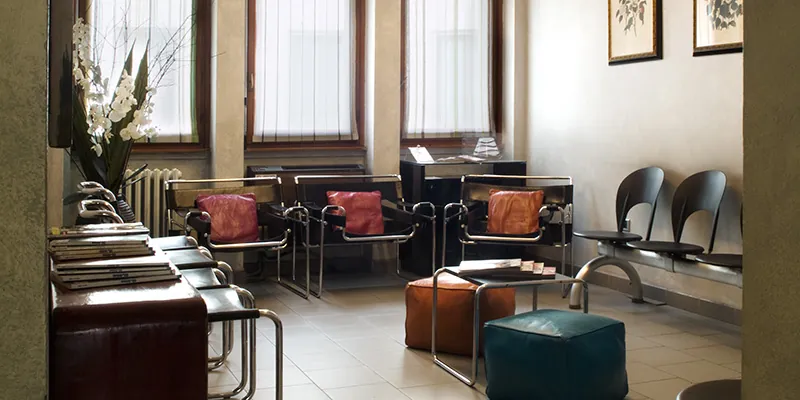
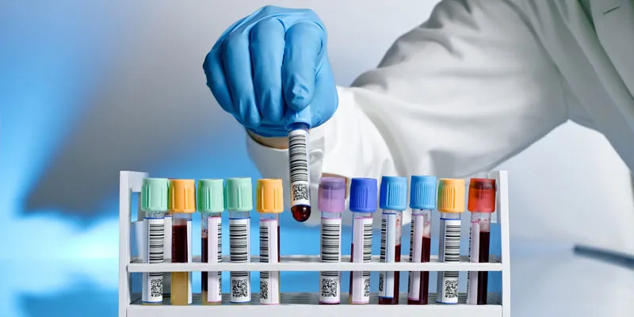
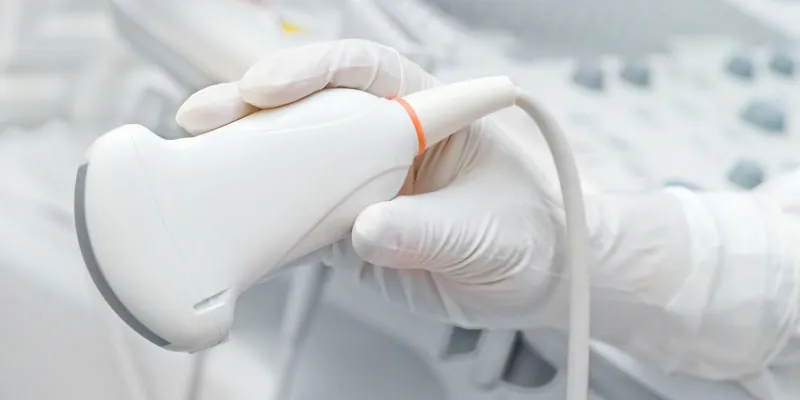

Poliambulatorio specialistico · Varese
Multi Medica Varese
Poliambulatorio specialistico nel centro di Varese, in Via Piave 9. Società a responsabilità limitata dal 1993, con 24 ambulatori e servizi di diagnostica.


Orari
Dal lunedì al venerdì
dalle 8.30 alle 19.00Riceviamo solo su appuntamento
Due parole su di noi
Multi Medica Varese ha assunto l'attuale configurazione di Società a Responsabilità Limitata nel 1993, sulla base di una sempre crescente domanda di Servizi Medico-Specialistici che, in combinazione ad una elevata professionalità e ad apparecchiature medicali ad alta tecnologia, rispondessero a criteri di reale «Servizio» quali: la facilità di contatto, la tempestività, l'integrazione tra discipline diverse.
Multi Medica Varese offre i propri Servizi in una zona logisticamente ideale nel centro di Varese; facilmente raggiungibile dai residenti, è comunque situata in prossimità delle Stazioni ferroviarie (FF.SS./FNM), che offrono ampi posteggi per le autovetture, delle fermate delle Autolinee urbane ed extraurbane, nonché dell'uscita dell'autostrada Varese-Milano.
- Facilità di contatto
- Tempestività
- Integrazione tra discipline diverse
Orari
Riceviamo solo su appuntamento
dal lunedì al venerdì
dalle 8.30 alle 19.00
Per appuntamenti: 0332 287257
I nostri ambulatori
24 ambulatori specialistici. Scegli la specialità per vedere le prestazioni eseguite e i medici.
- Andrologia
- Angiologia
- Cardiologia
- Chirurgia
- Dermatologia
- Diagnostica per immagini - Ecografia
- Ematologia
- Endocrinologia
- Fisiatria
- Gastroenterologia
- Ginecologia - Ostetricia
- Medicina interna
- Medicina legale e delle assicurazioni
- Neurochirurgia
- Neurologia
- Oculistica
- Odontoiatria
- Ortodonzia
- Ortopedia
- Otorinolaringoiatria
- Pneumologia
- Psicologia
- Reumatologia
- Urologia
Diagnostica
Esami e prestazioni diagnostiche eseguiti in sede, in 9 aree.


Convenzioni
19 convenzioni con fondi sanitari e assicurazioni, in forma diretta o indiretta. Per sapere se la tua è attiva, chiama la segreteria.


- CRAL Alenia Aermacchi

- Fabi

- FasiOpen
- Federdistribuzione
- FISDE Enel
- Faschim


- Insieme Salute
- Previass
- Previmedical
- RBM Salute

- Sara

Come raggiungerci
Multi Medica Varese si trova in una zona logisticamente ideale nel centro di Varese, facilmente raggiungibile dai residenti. È comunque situata in prossimità di:
- le Stazioni ferroviarie (FF.SS./FNM), che offrono ampi posteggi per le autovetture;
- le fermate delle Autolinee urbane ed extraurbane;
- l'uscita dell'autostrada Varese-Milano.
Via Piave, 9, 21100 Varese
Ozonoterapia
Informazioni sulla terapia con ozono, dalla sezione novità del poliambulatorio.